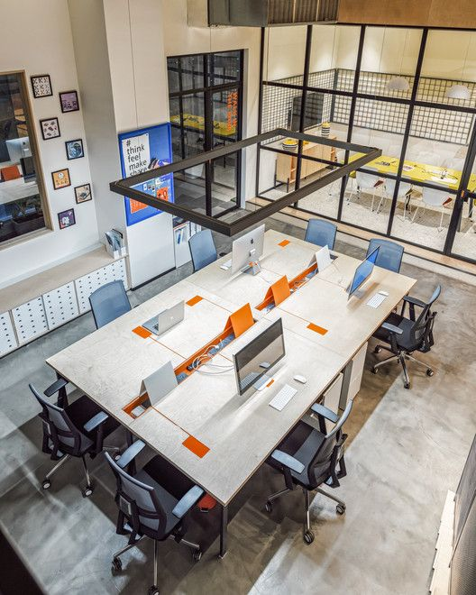

🖼️ Mabadiliko Yanavyoonekana (Picha Halisi)


Tabata Segerea inageuzwa kuwa kitovu cha kimataifa cha teknolojia na biashara – AI, ubunifu na uvumbuzi!
Bonde hili litaweka Tabata Segerea kwenye ramani ya dunia kama mji wa kisasa unaowezesha vipaji vya vijana, watafiti, na wabunifu. Lengo kuu ni kuunda mazingira ya kazi na maendeleo ya kiteknolojia kwa kushirikiana na sekta binafsi, taasisi za elimu, na wawekezaji.
Mwitikio wa jamii ni mkubwa. Vijana wengi tayari wanaanzisha miradi ya ubunifu. Serikali kupitia CCM na wadau binafsi wameanza kutenga maeneo rasmi ya kiteknolojia kwa utekelezaji.